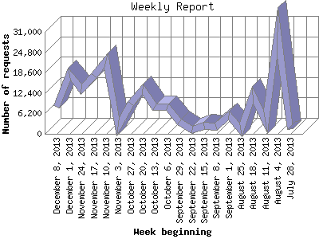

The Weekly Report identifies the activity for each week within the report
time frame. Remember that one page hit can result in several server requests
as the images for each page are loaded.
Note: Depending on the
report time frame for this report the first and last week may not represent
a full seven day week, resulting in lower hits.

| Week beginning | Number of requests | Number of page requests | |
|---|---|---|---|
| 1. | July 28, 2013 | 1,403 | 149 |
| 2. | August 4, 2013 | 30,895 | 185 |
| 3. | August 11, 2013 | 3,616 | 284 |
| 4. | August 18, 2013 | 11,906 | 314 |
| 5. | August 25, 2013 | 1,118 | 25 |
| 6. | September 1, 2013 | 5,483 | 293 |
| 7. | September 8, 2013 | 2,089 | 138 |
| 8. | September 15, 2013 | 2,456 | 155 |
| 9. | September 22, 2013 | 1,266 | 101 |
| 10. | September 29, 2013 | 3,599 | 243 |
| 11. | October 6, 2013 | 8,287 | 574 |
| 12. | October 13, 2013 | 8,212 | 749 |
| 13. | October 20, 2013 | 13,628 | 503 |
| 14. | October 27, 2013 | 9,285 | 540 |
| 15. | November 3, 2013 | 2,119 | 269 |
| 16. | November 10, 2013 | 22,180 | 1,723 |
| 17. | November 17, 2013 | 17,787 | 935 |
| 18. | November 24, 2013 | 13,606 | 708 |
| 19. | December 1, 2013 | 18,274 | 829 |
| 20. | December 8, 2013 | 8,196 | 260 |
Most active week beginning November 10, 2013 : 1,723 pages sent. 30,895 requests handled.
Weekly average: 448 pages sent. 9,270 requests handled.
This report was generated on December 12, 2013 02:08.
Report time frame August 3, 2013 03:16 to December 10, 2013 23:49.
| Web statistics report produced by: analog 6.0 / Report Magic 2.21 |